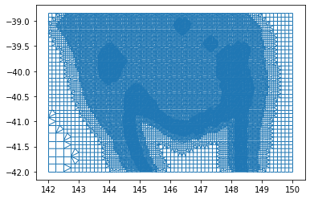

Mesh2d refine based on gridded samples with strided arrays
import matplotlib.pyplot as plt
plt.close("all")
import numpy as np
from meshkernel import (
MeshKernel,
ProjectionType,
MakeGridParameters,
GriddedSamples,
MeshRefinementParameters,
RefinementType,
)
import xarray as xr
Import sampled bathymetry generating non contiguous arrays
lon_min, lon_max, lat_min, lat_max = 142, 150, -42, -39
dxy = 0.5
file_nc_bathy = r"p:\metocean-data\open\GEBCO\2021\GEBCO_2021.nc"
data_bathy = xr.open_dataset(file_nc_bathy)
data_bathy_sel = data_bathy.sel(
lon=slice(lon_min, lon_max, 10), lat=slice(lat_min, lat_max, 10)
).elevation
Generate rectangular mesh
# create base grid
make_grid_parameters = MakeGridParameters(
angle=0,
origin_x=lon_min,
origin_y=lat_min,
upper_right_x=lon_max,
upper_right_y=lat_max,
block_size_x=dxy,
block_size_y=dxy,
)
mk = MeshKernel(projection=ProjectionType(1))
mk.curvilinear_compute_rectangular_grid_on_extension(make_grid_parameters)
mk.curvilinear_convert_to_mesh2d()
Refine the mesh
lon_np = data_bathy_sel.lon.to_numpy()
lat_np = data_bathy_sel.lat.to_numpy()
values_np = data_bathy_sel.to_numpy().flatten().astype(np.float32)
gridded_samples = GriddedSamples(
x_coordinates=lon_np, y_coordinates=lat_np, values=values_np
)
# refinement
mesh_refinement_parameters = MeshRefinementParameters(
min_edge_size=1000, refinement_type=RefinementType.WAVE_COURANT
)
mk.mesh2d_refine_based_on_gridded_samples(
gridded_samples=gridded_samples, mesh_refinement_params=mesh_refinement_parameters
)
Plot the refined mesh
fig, ax = plt.subplots()
mk.mesh2d_get().plot_edges(ax=ax, linewidth=1)
